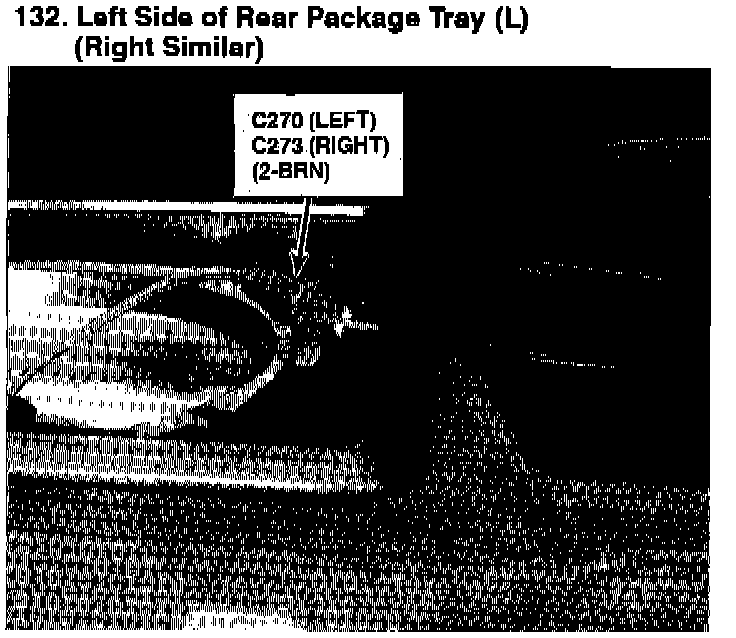

Operation CHARM
: Car repair manuals for everyone.
Home
>>
Acura
>>
1993
>>
Legend Coupe V6-3206cc 3.2L SOHC FI
>>
Repair and Diagnosis
>>
Engine, Cooling and Exhaust
>>
Cooling System
>>
Radiator Cooling Fan
>>
Radiator Cooling Fan Motor
>>
Diagrams
>>
Diagram Information and Instructions
>>
Locations and Photographs
>>
Component/Connector Locations (Photographs)
>>
126 Thru 150
>>
132
126 Thru 150: 132
